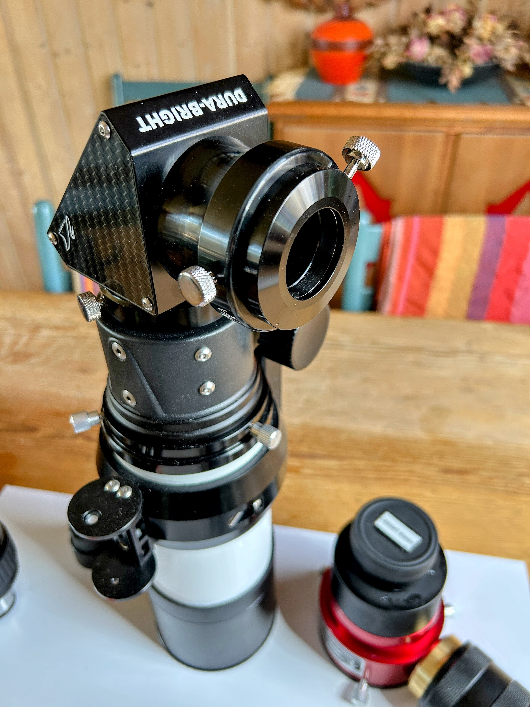

This is how the LS60MT telescope look like when ready to be used as a regular telescope. In this configuration it must never be pointed to the sun. Be sure to read the description below the picture.

LS60MT Ready For Night Observing / Imaging
Notice no solar filters are mounted, telescope must not be used for any solar work.
The William Optics Diagonal is maounted with its 2 inch to 1.25 inch reducer which is needed to be able to use the Pentax Zoom. This reducer is also used as previous topic page show to use the Lunt Herschel Diagonal.